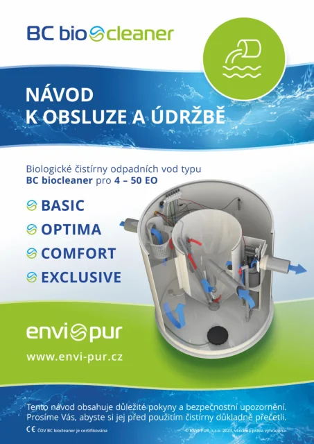
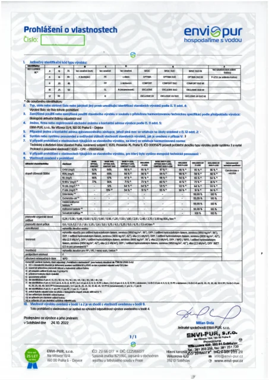
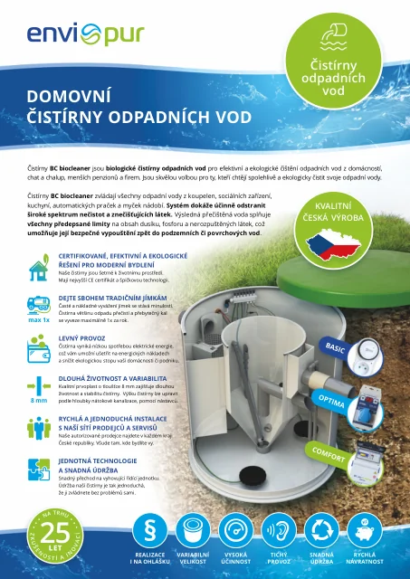
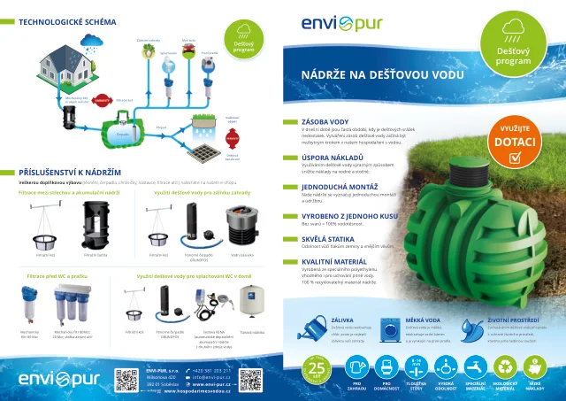
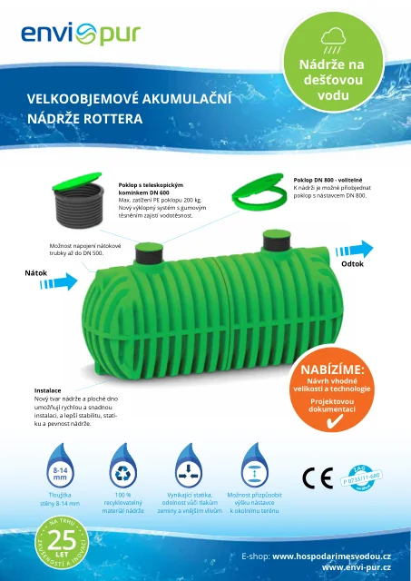

PDF ↗Návod k obsluze / 6.2 MB
Dokumenty
Prohlédněte si návody, technické informace a přehledy technologií. Každý dokument můžete rovnou otevřít nebo stáhnout.
5 původních PDF dokumentů
PDF ↗Návod k obsluze / 6.2 MB

PDF ↗Prohlášení o vlastnostech / 517 kB

PDF ↗
PDF ↗
PDF ↗Takový dokument jsme nenašli. Zkuste jiný název nebo oblast.
Napište nám, jakou technologii řešíte. Pomůžeme vám vybrat další postup.